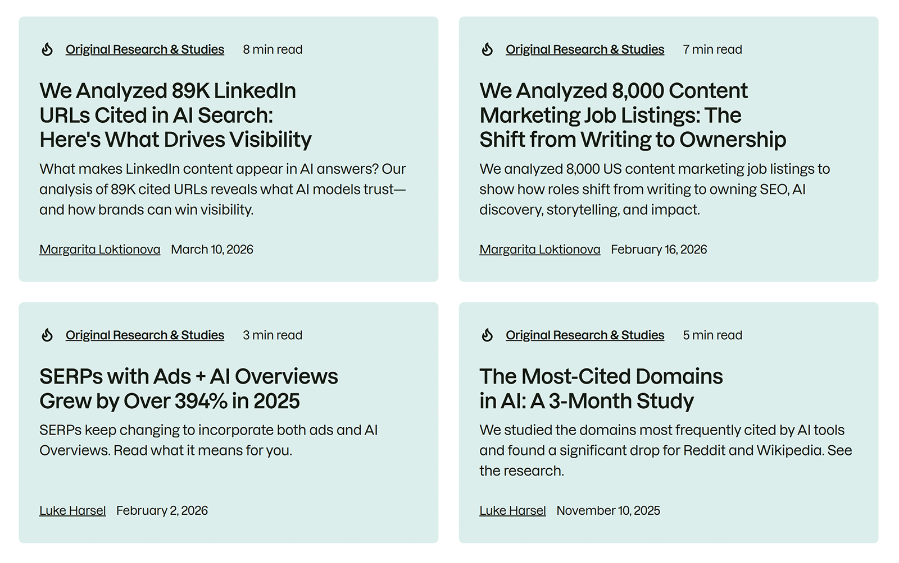

一、核心结论：来源差异来自产品生态和问题任务
豆包、DeepSeek、元宝的引用来源可能不同，这并不奇怪。它们的产品入口、检索能力、内容生态、展示方式和用户场景不同，同一问题下选择的证据来源也可能不同。
企业做GEO监测时，不应急着给某个平台下“偏好某类来源”的绝对结论。更稳妥的做法，是用同一问题集分别观察来源类型、事实准确性和品牌位置。
二、为什么不同平台会引用不同来源

AI产品不是只在互联网上随机找页面。它们可能结合搜索引擎、公开网页、平台生态内容、模型已有知识和用户上下文。产品越接近某个内容生态，就越可能在部分问题中展示不同来源组合。
问题类型也很关键。新闻类问题更依赖时效来源，产品对比更依赖评测和官网，操作类问题更依赖文档和教程，行业判断更依赖媒体、报告和机构资料。
三、可以如何分类引用来源
做平台比较时，先把来源类型统一。否则一个平台引用官网，一个平台引用媒体，一个平台引用社区，很难判断差异到底来自平台策略，还是来自问题需要。
下面的分类适合企业建立中文AI引用来源记录表。
| 来源类型 | 常见作用 | 需要核验 |
|---|---|---|
| 品牌官网 | 标准事实、一手定义 | 是否结构清楚、是否可抓取 |
| 产品文档 | 功能细节、操作步骤 | 是否更新及时、是否面向用户问题 |
| 媒体报道 | 公司动态、行业语境 | 是否过时、是否断章取义 |
| 社区内容 | 真实体验、争议问题 | 是否代表普遍情况 |
| 生态内容 | 公众号、百科、平台文章 | 是否与官网事实一致 |
四、比较平台时要避免哪些误判
最大误判是用一次答案代表平台长期表现。AI答案会受问题表述、时间、检索状态和内容更新影响。另一个误判是只看来源数量，忽略来源质量。更多引用不一定更可信，少量高质量来源可能更有价值。
还要避免把“没有引用官网”直接理解成平台排斥官网。很多时候是官网页面没有回答具体问题，或第三方页面提供了更完整的比较语境。
- 不要用一次回答推断长期来源偏好。
- 不要只统计来源数量，还要看事实是否准确。
- 不要把平台差异全部归因于算法，也要检查官网内容结构。
- 不要忽略问题类型，不同问题本来就需要不同来源。
五、企业如何建立跨平台来源监测
跨平台监测要保持同一问题集、同一记录口径和同一错误分类。问题集可以覆盖品牌、品类、对比、场景和风险五类。每次记录平台、问题、答案摘要、引用来源类型和错误点。
当发现某个平台经常引用过时来源时，企业可以先检查该来源的内容是否仍被搜索系统发现，再通过官网、媒体资料和公开说明补强正确事实。
- 建立统一问题库，覆盖品牌词、品类词、对比词和场景词。
- 为每条答案标注来源类型、品牌位置和核心事实。
- 把错误归类为名称、能力、场景、价格、客户类型或时效问题。
- 把高频错误回写到官网、文档、FAQ和第三方资料中。
六、结论：平台差异要转化为来源治理
豆包、DeepSeek、元宝引用来源不同，是中文AI搜索生态的一部分。企业不需要追求所有平台给出完全相同答案，而要确保关键事实在不同平台里尽量稳定。
真正有价值的GEO工作，是把平台差异转化为来源治理：官网负责标准事实，文档负责细节，媒体和生态内容负责外部语境，所有来源都尽量减少冲突。
参考文献
- 豆包官方网站 -https://www.doubao.com/
- DeepSeek API Docs：联网搜索上线官网 -https://api-docs.deepseek.com/zh-cn/news/news1210
- 腾讯元宝官方网站 -https://yuanbao.tencent.com/
- Microsoft Learn：RAG and Generative AI in Azure AI Search -https://learn.microsoft.com/en-us/azure/search/retrieval-augmented-generation-overview
- NIST：AI Risk Management Framework -https://www.nist.gov/itl/ai-risk-management-framework
FAQ
Q1：豆包、DeepSeek、元宝引用来源不同是否正常？
正常。不同产品的检索源、生态内容、展示方式和用户场景不同，同一问题可能引用不同来源。企业要关注的是核心事实是否一致、品牌是否被准确描述，而不是要求所有平台给出完全相同的链接。
Q2：能不能说某个平台一定更爱引用官网？
不建议下绝对结论。平台表现会随问题类型、时间、检索状态和内容更新变化。即使某次答案引用官网，也不能代表长期偏好。更可靠的方法是用同一问题集多次观察，并把来源类型和事实准确性分开记录。
Q3：跨平台监测最应该看什么？
优先看品牌名称、产品定义、能力边界、适用场景和引用来源质量。这些信息直接影响用户判断。来源数量和答案长短只是辅助信号，不能替代事实准确性。企业应把错误类型记录下来，回到内容源头修正。
Q4：元宝引用生态内容，对企业意味着什么？
如果某个平台更多展示生态内容，企业就要关注公众号、媒体、百科、合作伙伴资料等外部内容是否准确。官网仍然重要，但外部生态资料也会影响AI理解。企业应避免不同渠道使用互相冲突的品牌和产品描述。
Q5：DeepSeek联网搜索答案变化较大怎么办？
先把变化拆成来源变化和事实变化。来源不同不一定有问题，事实漂移才需要处理。企业可以记录高价值问题的答案样本，找出反复出现的错误来源，再补官网说明、文档和第三方资料中的正确证据。
Q6：跨平台GEO是否需要为每个平台写专属页面？
通常不需要。企业应先建立统一事实源，再根据不同问题补充页面类型。专属页面容易造成信息分裂，长期反而增加模型误解。更好的方式是让官网、文档、案例和外部资料在核心事实上保持一致。
Q7：如果某个平台完全不提品牌，应该先做什么？
先判断是品牌认知弱、品类关联弱，还是内容不可获取。可以检查官网是否可抓取、是否有清楚定义、是否有行业场景页和第三方资料。然后用品牌词、品类词和对比词分别测试，定位缺口，而不是直接大量发文章。